Using micro:bit Classroom with MakeCode#
Starting a New micro:bit Classroom Session#
Start a new session at classroom.microbit.org.
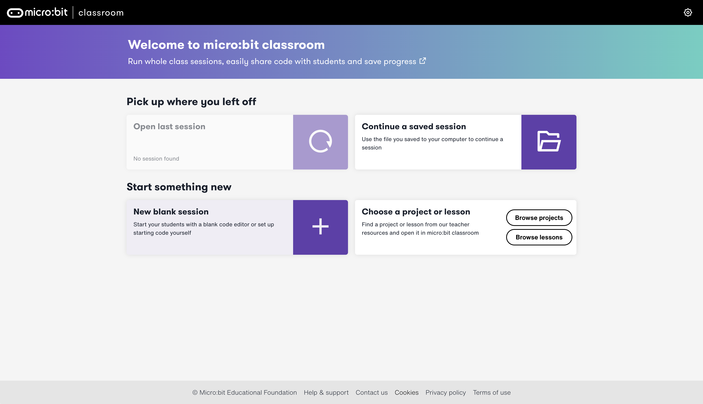
The landing page has several new options. To start a new session, select “New blank session”.
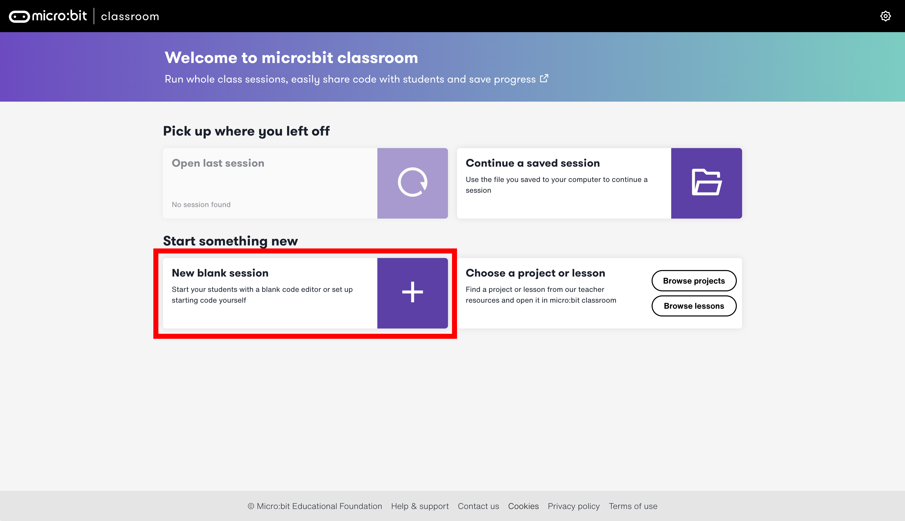
In the “New session startup” window, select MakeCode.
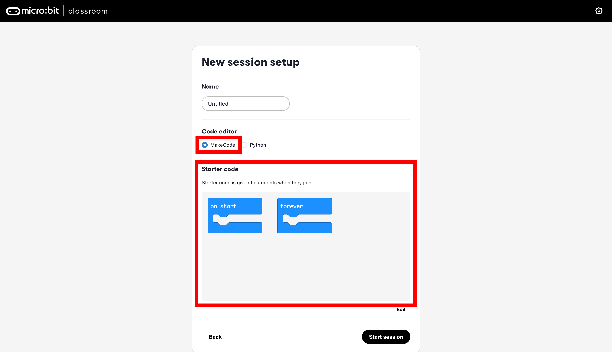
With MakeCode selected, give the session an name and edit the starter code.
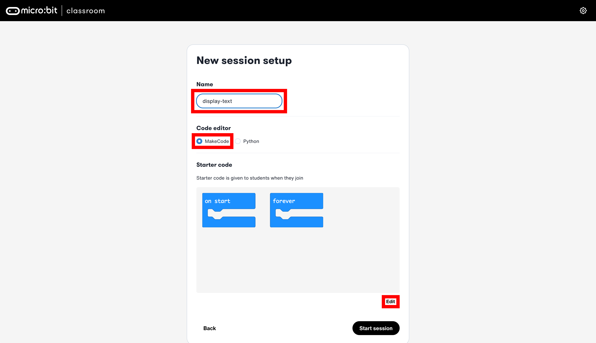
This will open up the MakeCode editor in micro:bit classroom.
Edit the starter code for the students.
Note
Starter code facilitates the learning experience for students. There are times where code may complex and beyond the scope of the lesson. This helps students focus on the code necessary to complete the objectives of the lesson.
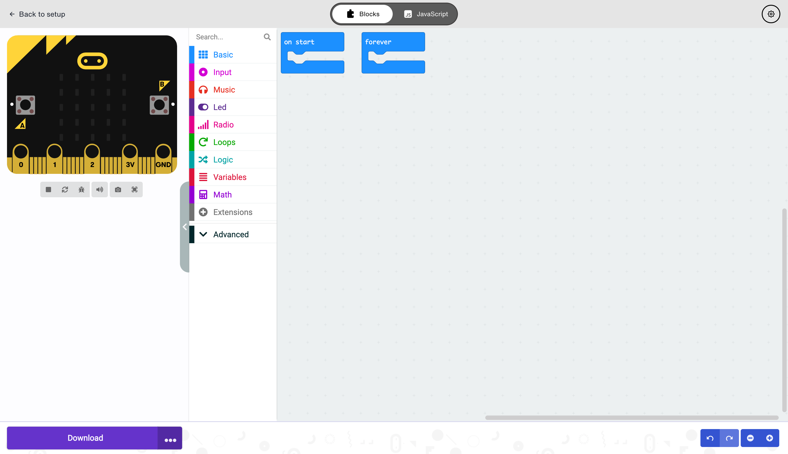
Tip
Giving students directions as comments may help them understand the assignment more. It also demostrates a best practice of commenting code. To add a comment in MakeCode, right-click on the workspace and select “Add Comment”:
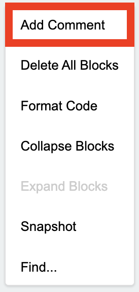
Type the comment, instructions or hints in the yellow box:
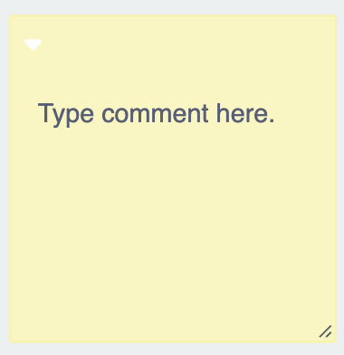
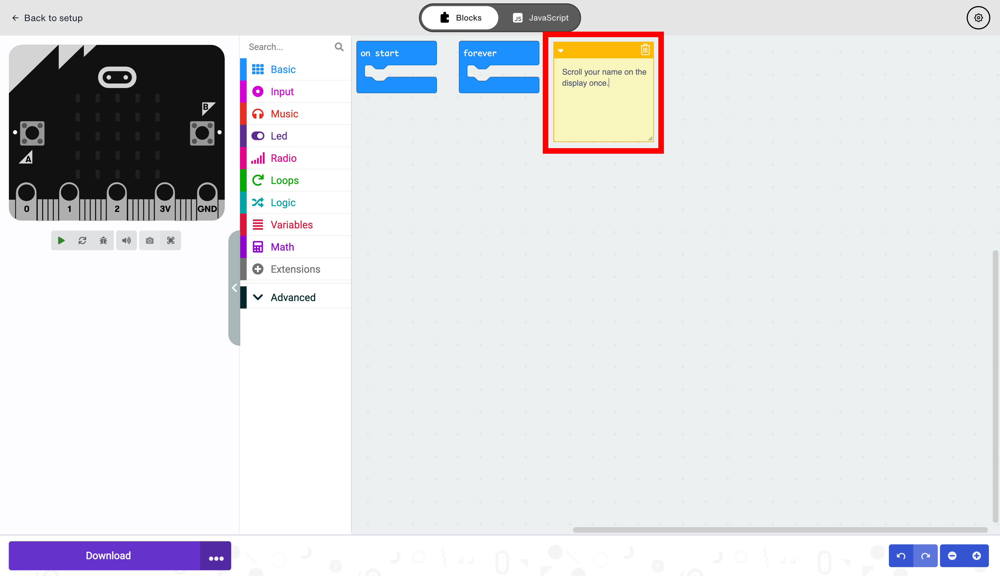
After the starter code has been edited, select “Back to setup” to leave the MakeCode editor and return to the “New session setup” window in micro:bit Classroom.
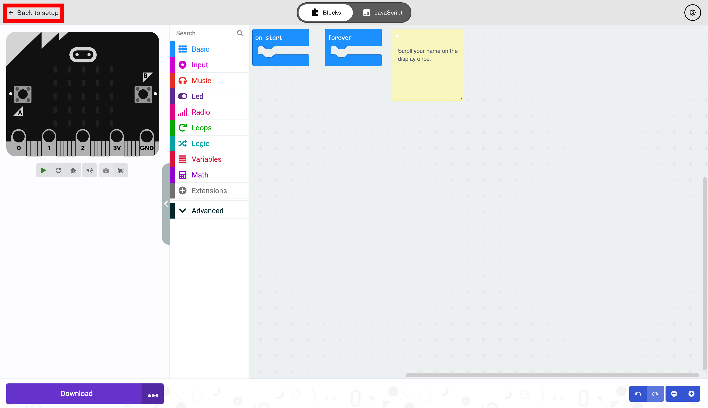
The starter code will appear edited, and the session can begin by selecting “Start session”.
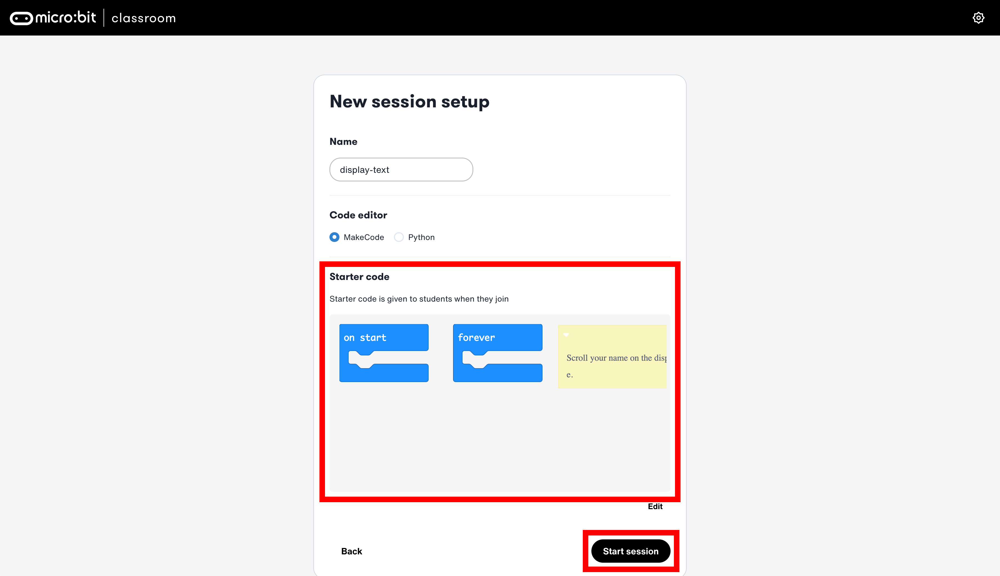
Tour of micro:bit Classroom#
The layout of micro:bit classroom is displayed below:
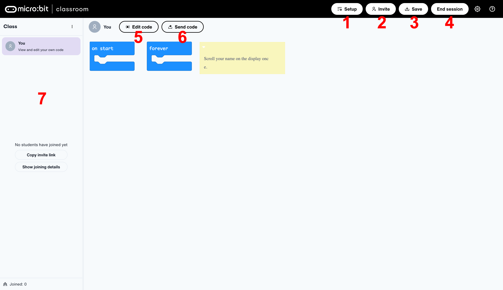
Index |
GUI |
Function |
|---|---|---|
1 |
“Setup” Button |
Opens a window similar to the “New session setup” window. (See below) |
2 |
“Invite” Button |
Generates an invite link. |
3 |
“Save” Button |
Generates a .dotx document with the attendance and the students code. |
4 |
“End session” Button |
TODO |
5 |
“Edit code” Button |
Opens the MakeCode editor to edit code. |
6 |
“Send code” Button |
TODO |
7 |
The Roster |
Displays the students that join the session. |
Adding Students to the Session#
Teacher View#
Students can join the session at microbit.org/join. This screen can be presented to the students
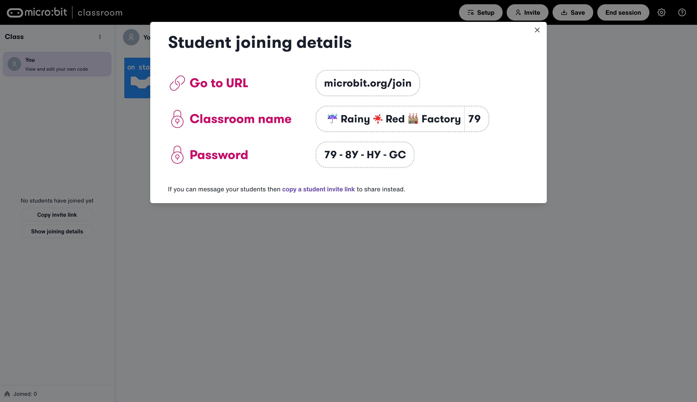
Student View#
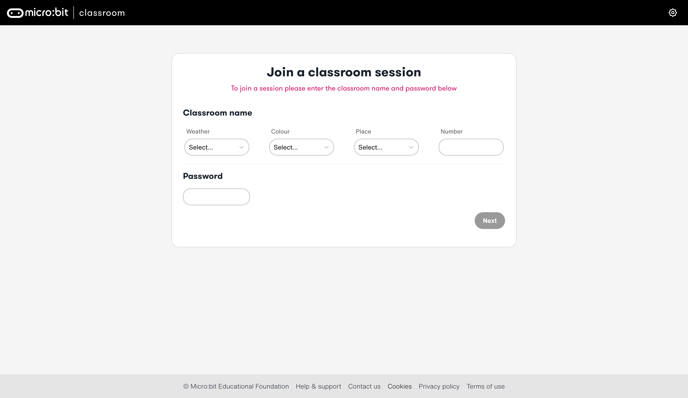
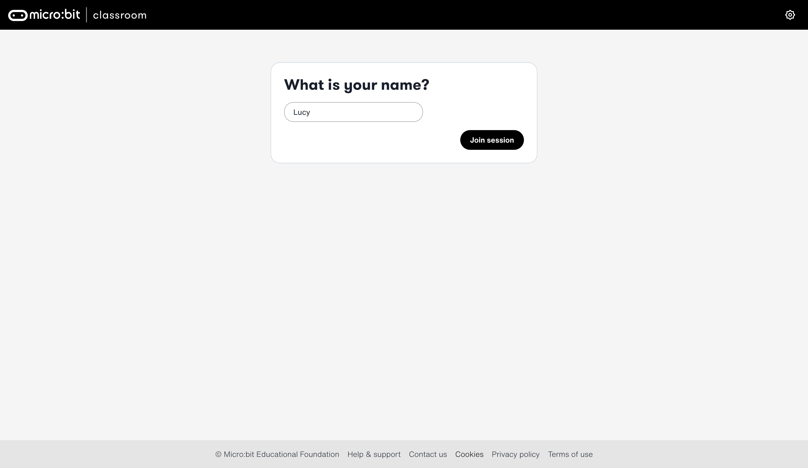
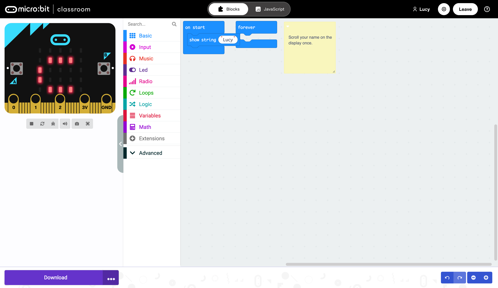
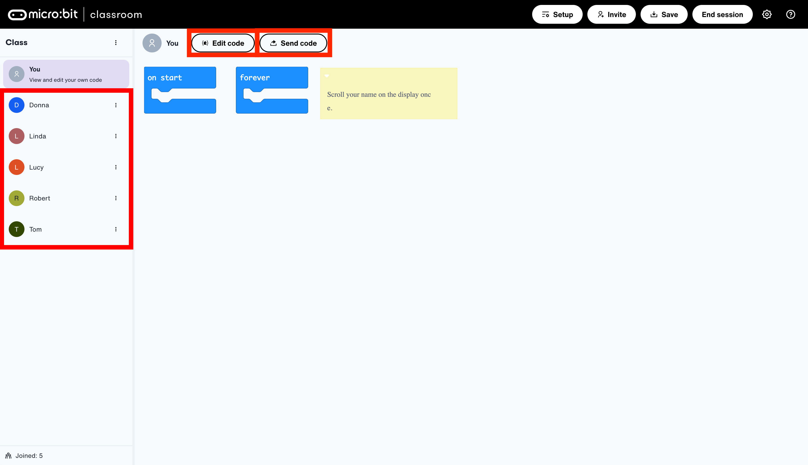
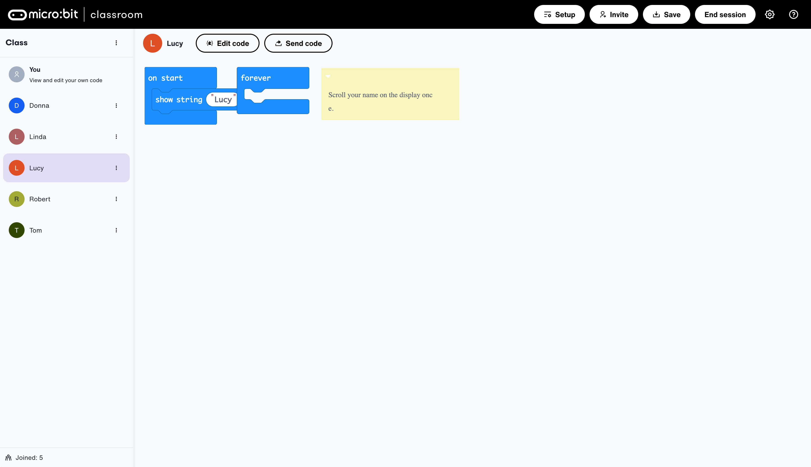